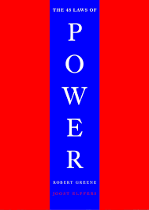

{Book Review}: The Laws of Power by Robert Greene
Posted on June 28, 2025
This book changed the way I think about strategy and influence...
 Although now mainstream, the book, The 48 Laws of Power, still stands as a strong pillar for he who is on a journey to improve himself. The book is very well written and really pulls you in. In The 48 Laws of Power, Robert Greene breaks down historical and psychological tactics for influence and control. While controversial, it’s a fascinating look at human behavior that blends perfectly with strategic thinking and personal development. After reading the book, I find myself trying to implement it in all corners of life. It comes with many analogies and real life examples of how these rules have lead to success and power.
Robert Greene’s The 48 Laws of Power is one of those books that challenges your worldview — not by preaching, but by presenting raw, historical truths about how people navigate authority, control, and influence. It doesn’t ask you to agree with the strategies, but to understand that power — whether you seek it or not — is a force constantly at play in social, political, and personal relationships.
What makes the book fascinating is its blend of brutal honesty and timeless relevance. Greene draws from the actions of emperors, generals, courtiers, and con artists to reveal how manipulation, strategy, and psychology have always been tools of those who rise to the top. Whether you use the laws, defend against them, or observe them in others, the book sharpens your awareness of how influence works in real life.
Some laws feel obvious in hindsight — like “Guard your reputation” — while others are uncomfortably cunning. Yet in every law lies a truth about human behavior that resonates across centuries.
Each chapter is short, sharp, and easy to revisit, making it ideal for reflection or strategic thinking.
Law 4: Always say less than necessary.
This was the most powerful message for me. Silence is power. It creates mystery, control, and authority. The more you speak the more likely you are to say something foolish...